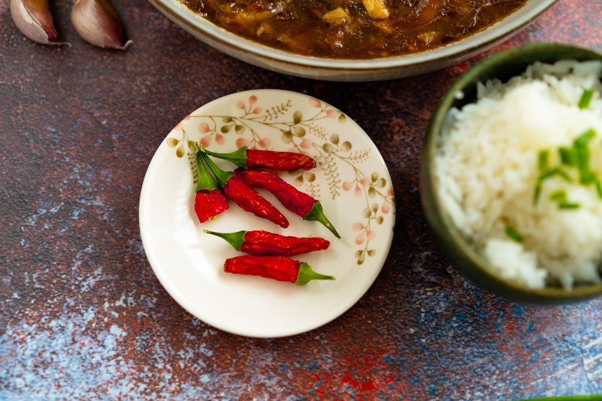
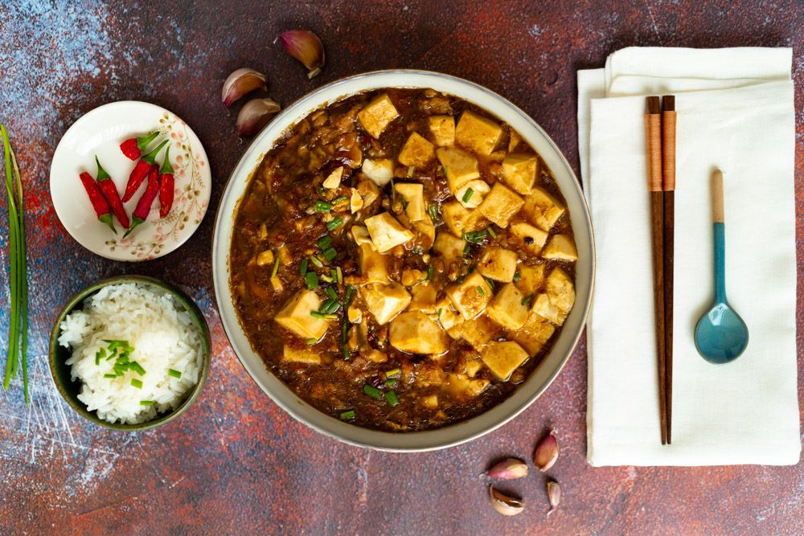
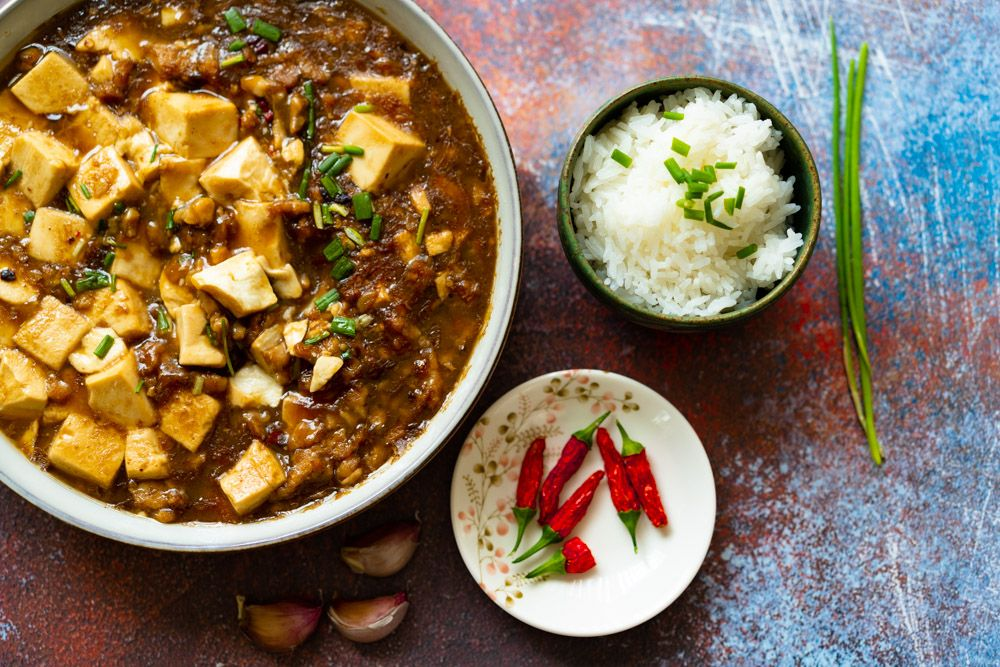

Description
Mapo Tofu is a popular Chinese dish from Sichuan Province, where spicy food is king and the signature spice of the region––the Sichuan Peppercorn––gives dishes a unique “numbing” effect. It’s almost like the Sichuan peppercorns are there to not only add their fragrance and flavor, but also to numb your tongue so it can take more heat!
The name of the dish roughly translates to “pockmarked grandma’s tofu.” Whatever its origins, mapo tofu has made it out of Sichuan Province and spread around the world. The dish has taken on many forms as restaurants and takeout joints have put their own spin on it, often lessening spice levels, adding different vegetables, and transforming the dish into something else entirely!
Ingredients
Marinade
- 120 grams (4 ounces) ground meat (pork, chicken or turkey)
- 2 teaspoons Shaoxing wine (or dry sherry)
- 1 teaspoon light soy sauce
- 1/2 teaspoon ginger , minced (or 1/4 teaspoon ginger powder)
For braising
- 1 teaspoon cornstarch (optional)
- 2 teaspoons Sichuan peppercorns (increase to 3 teaspoons if you like your dish extra numbing)
- 1 tablespoon vegetable oil
- 3 tablespoons Doubanjiang (reduce to 2 table- spoons for a less saltier and less spicy taste)
- 2 tablespoons green onion , chopped
- 1 block (400-g / 14-oz) firm or medium firm tofu , cut into 1.5cm (1/2 inch) squares
- 1 cup water (or chicken stock)
- 2 teaspoons homemade chili oil (1 teaspoon for a less spicy dish)
- 1/4 teaspoon five-spice powder
- 1 teaspoon sugar (or to taste)
- 1 tablespoon green part of chopped green onion for garnish (optional)
- steamed rice to serve with (optional)
Instructions
- Combine ground meat, cooking wine, soy sauce, and ginger in a bowl. Mix well.
- Combine cornstarch with 1 tablespoon water in a small bowl. Mix well and set aside.
- Heat vegetable oil and Sichuan peppercorns in a large nonstick skillet over medium high heat. When the Sichuan peppercorns turn dark brown and crispy, scoop them out with spatula and transfer into a bowl layered with paper towel to soak extra oil. Save to use for garnish the dish.
- When oil is hot, add ground meat and Doubanjiang. Stir-fry over medium heat with a spatula, until pork is evenly coated with Doubanjiang. Add green onion and stir fry for another minute.
- Spread tofu evenly on top of ground pork. Add chili oil, five-spice powder, and sugar. Pour in water and cook until bring- ing to a simmer. Simmer, covered, over low heat for 10 to 15 minutes, until tofu becomes tender and the sauce has reduced to half the original amount. Taste the tofu with some broth (be careful, it will be very hot!). Adjust seasoning by adding salt. If the dish is too spicy, add another teaspoon of sugar. Gently mix well with spatula.
- Meanwhile, ground the fried Sichuan pepper- corns (you used when heating up the oil) in a coffee grinder or by using mortar and pastel.
- Mix cornstarch water again until fully dis- solved and swirl it into the skillet. Gently stir a few times with a spatula, until sauce thickens. Turn off heat and transfer everything to a bowl.
- Garnish with green onion and a small pinch the ground Sichuan pepper-corns if using. Serve warm over steamed rice or by itself as main.
Sample imagery
  Recipe websites
- madewithlauis a very good example of combining text with images.
- justonecookbookdemonstrates how different languages could appear harmoniously on a page.
- cookingnytimeshas a clean home page and the content is delivered clearly.
Non-recipe websites
- squarespacedemonstrates effective design with a vibrant color scheme.
- squarespacehas content that flows really well when scrolling down the page.
- wovenmagazinehas a cite that the categories are divided effectively and clearly.